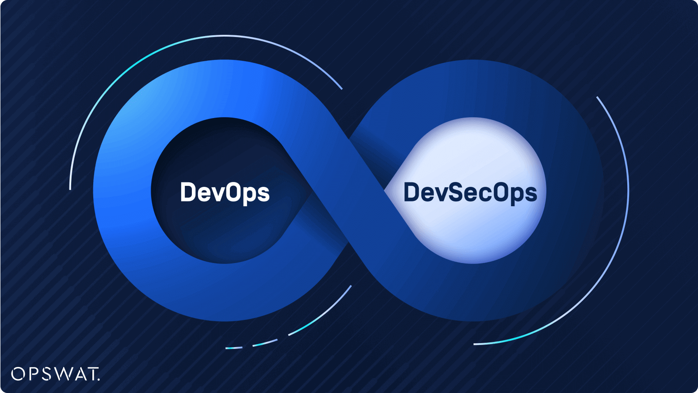
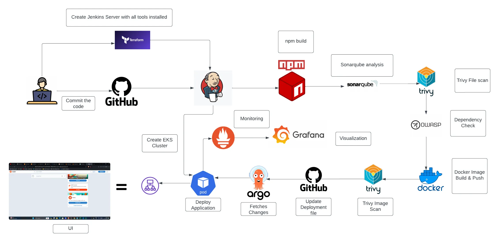
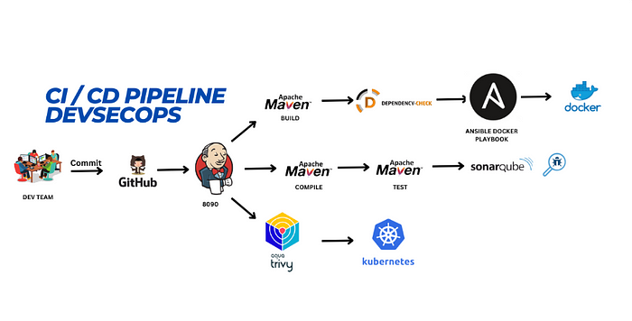
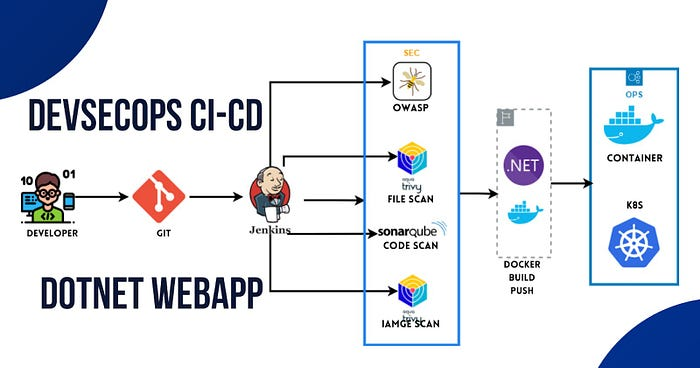
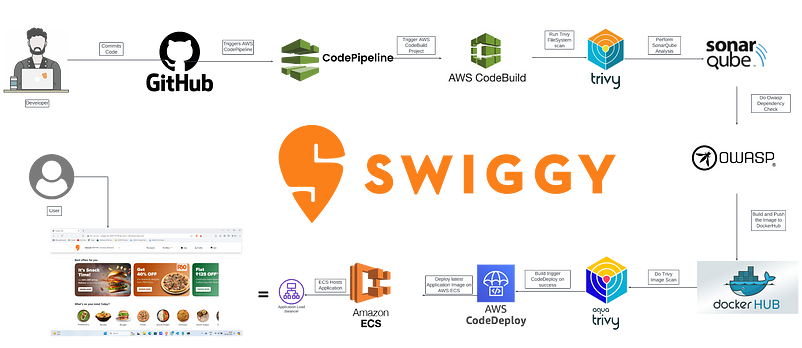
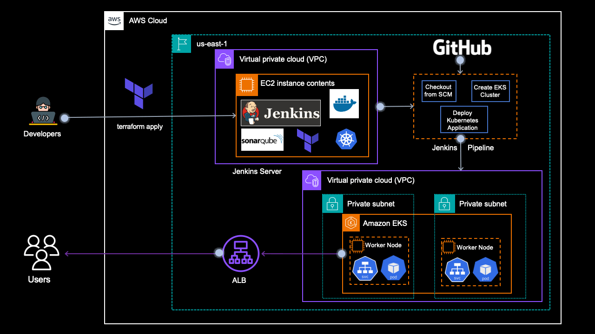
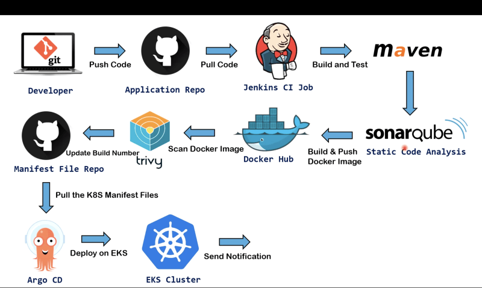
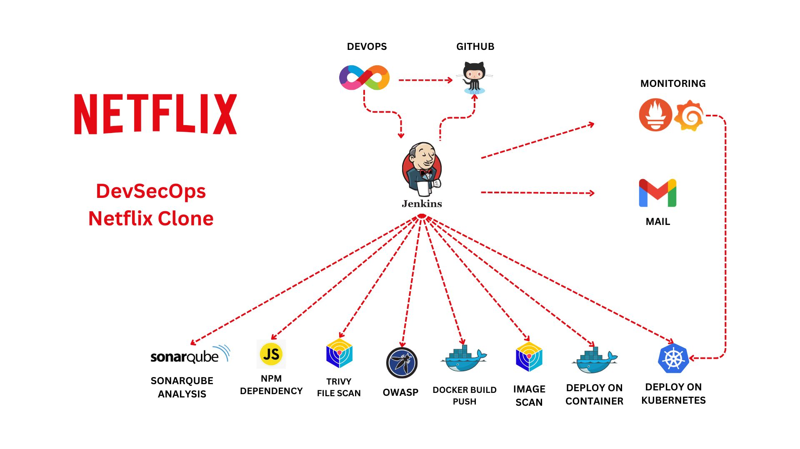
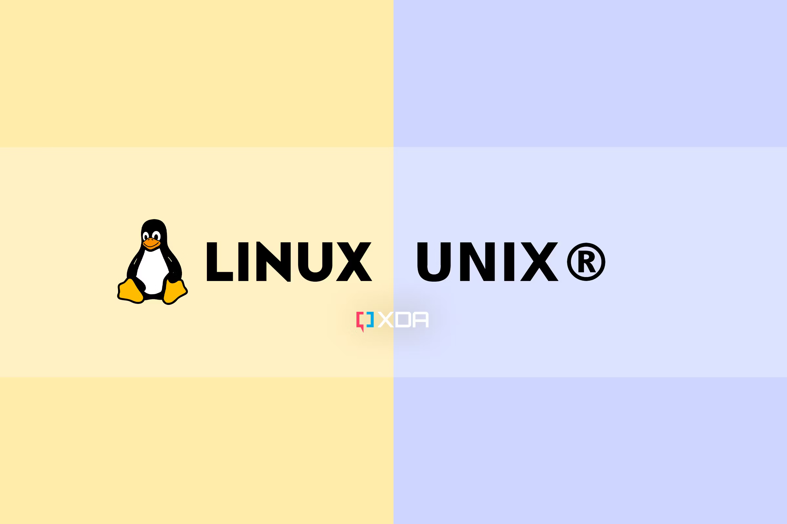

Njeck Cedric the DevOps/DevSecOps Engineer
Driving Innovation through DevOps & Securing the Future with DevSecOps | Experienced Engineer Specializing in Continuous Integration, Deployment & Security Automation | Expertise in Cloud Technologies, Infrastructure as Code, and Containerization | Dedicated to Optimizing Development Processes for Efficiency & Security | Portfolio Showcasing Successful Implementations & Contributions to Scalable & Secure Infrastructures for Modern Applications @njeckcedric

DevSecOps: OpenAI Chatbot UI Deployment in EKS with Jenkins and Terraform
Introduction: In today’s digital world, user engagement is key to the success of any application. Implementing DevSecOps practices is essential for ensuring security, reliability, and efficient deployment processes. In this project, we aim to implement DevSecOps for deploying an OpenAI Chatbot UI. We will use Kubernetes (EKS) for container orchestration, Jenkins for Continuous Integration/Continuous Deployment (CI/CD), and Docker for containerization.

🚀DevSecOps: Deploy Reddit App to Amazon Elastic Kubernetes Service (EKS) using ArgoCD and monitor its performance ✨
Introduction: In the fast-paced world of modern software development, the convergence of development, security, and operations, known as DevSecOps, has become essential for delivering secure and reliable applications at scale. As organizations strive to accelerate their release cycles while maintaining high standards of security and reliability, implementing robust DevSecOps practices becomes paramount. In this blog post, we’ll embark on an exciting journey into the realm of DevSecOps, exploring how to deploy a popular application, Reddit, to Amazon Elastic Kubernetes Service (EKS) using ArgoCD, a GitOps continuous delivery tool, and how to monitor its performance for optimal results. We’ll delve into each aspect of this process, from setting up the infrastructure on AWS EKS, orchestrating the deployment using ArgoCD, to implementing comprehensive monitoring solutions to ensure the health and performance of our Reddit application.
DevSecOps (DevOps) Project: Deploying a Petshop Java-Based Application with CI/CD, Docker, and Kubernetes
Introduction: In this blog, I will walk you through the process of deploying a Petshop Java-Based Application using Jenkins as a CI/CD tool. This deployment utilizes Docker for containerization, Kubernetes for container orchestration, and incorporates various security measures and automation tools like Terraform, SonarQube, Trivy, and Ansible. This project showcases a comprehensive approach to modern application deployment, emphasizing automation, security, and scalability. This project was an incredible learning experience, providing hands-on practice with a variety of tools and technologies critical for modern DevOps practices. I’m excited to share my work and look forward to any feedback or questions you might have! 💬
🌻 Real-Time DevSecOps Pipeline for a DotNet Web App 🌻
Introduction: We will be deploying a .NET-based application. This is an everyday use case scenario used by several organizations. We will be using Jenkins as a CICD tool and deploying our application on a Docker Container and Kubernetes cluster. Hope this detailed blog is useful. This project shows the detailed metric i.e. CPU Performance of our instance where this project is launched.
DevSecOps: Blue-Green Deployment of Swiggy-Clone on AWS ECS with AWS Code Pipeline
Introduction: In the realm of modern software development, DevSecOps practices are gaining prominence for their emphasis on integrating security seamlessly into the software development lifecycle. One critical aspect of this approach is implementing efficient deployment strategies that not only ensure reliability but also maintain security standards. In this blog post, we will delve into the concept of Blue-Green deployment and demonstrate how to apply it to a Swiggy-clone application hosted on AWS ECS (Elastic Container Service) using AWS Code Pipeline.
AWS DevOps CICD Pipeline
Introduction: In This Project, we are Developing and Deploying a video streaming application on EC2 using Docker and AWS Developers Tools.
CodeCommit: For Source Code Management.
CodeBuild: For building and testing our code in a serverless fashion.
CodeDeploy: To deploy our code.
CodePipeline: To streamline the CI/CD pipeline.
System Manager: To store Parameters.
DockerHub: To store Docker Images in a Repository.
Identity and Access Management (IAM) for creating a Service Role.
S3 for artifact storing.
EC2 for Deployment.
From Scratch to Production: Deploying EKS Clusters and Applications with CI/CD using Jenkins and Terraform
Introduction: Are you looking to streamline your application delivery process and automate your infrastructure deployment? Look no further! In this project, I'll take you through the process of setting up an EKS cluster, deploying an application, and creating a CI/CD pipeline using Jenkins and Terraform. We'll start with the basics and gradually dive deeper into the technical details, so you'll find this guide helpful whether you're a beginner or an experienced DevOps engineer. By the end of this article, you'll have a fully functional EKS cluster and a simple containerized application up and running, with a CI/CD pipeline that automates the entire process from code to production.
Real Time DevOps Project | Deploy to Kubernetes Using Jenkins | End to End DevOps Project | CI/CD
Introduction: This project focuses on implementing a Real-time DevOps workflow using Jenkins to deploy applications to Kubernetes. It covers an end-to-end DevOps process, integrating Continuous Integration and Continuous Deployment (CI/CD) practices. The project aims to streamline the development process, improve deployment efficiency, and enhance overall application delivery in a Kubernetes environment through automation and effective collaboration.
DevSecOps : Netflix Clone CI-CD with Monitoring | Email
Introduction: We will be deploying a Netflix clone. We will be using Jenkins as a CICD tool and deploying our application on a Docker container and Kubernetes Cluster and we will monitor the Jenkins and Kubernetes metrics using Grafana, Prometheus and Node exporter.
Fun with Linux for Cloud & DevOps Engineers
Introduction: Linux is a powerful operating system that offers endless possibilities for cloud and DevOps engineers to explore and utilize in their work. Its flexibility and open-source nature make it a popular choice for those in the field. Engineers can customize and optimize their environments using Linux, enabling them to work efficiently and effectively in a variety of cloud and DevOps scenarios.
© Untitled. All rights reserved. Design: HTML5 UP.